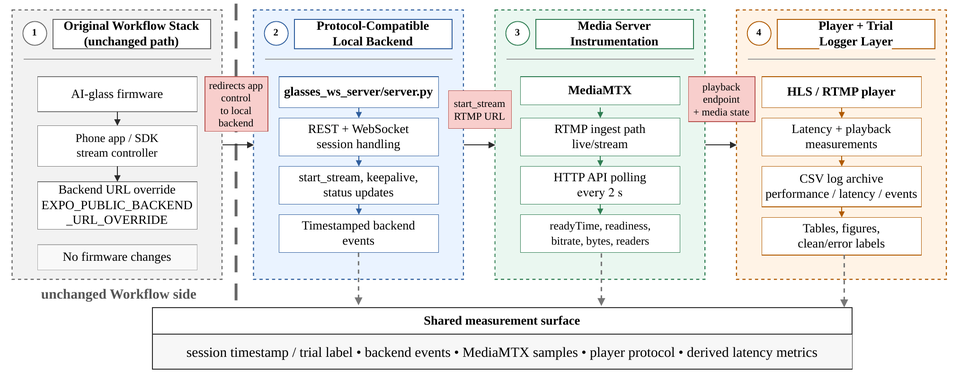

See where the delay happens
- Smart Glasses
- Phone App
- Backend Relay
- Media Server
- Viewer
Original MentraOS
- App code
- SDK callbacks
- Destination config
- Timing remains hidden across the downstream path
GlassScope
- Start command
- SDK-active observed
- Backend receive
- Backend forward
- MediaMTX readyTime
- Viewer attach
- First decoded frame
Structured, timestamped logs
Abstract
AI-glass applications rely on timely video delivery to support real-time visual services. Hence, it is crucial to measure and understand the latency of AI-glass live streaming. Existing open-source AI-glass codebases do not provide the per-stage timing needed to determine where latency is introduced.
To bridge this gap, this paper presents GlassScope, an open-source measurement layer for AI-glass live streaming. GlassScope instruments an existing open-source workflow by adding a protocol-compatible local backend, a MediaMTX monitor, a player-side logger, and shared per-trial records. Across 90 clean sessions and three streaming configurations, GlassScope exposes latency and playback behaviors that are hidden in the original workflow. We release the measurement layer, log schema, and evaluation logs to support reproducibility and broader community use.
Explore the measurement pipeline
Select a stage to see its role and what GlassScope records there. Each stage’s role and what GlassScope records there are listed below the diagram. Dashed lines carry control messages; solid lines carry video.
-
Control: REST setup calls, then
start_stream, keepalive, and status messages over WebSocket. The backend also polls the MediaMTX API every 2 s. -
Video: published over RTMP from the glasses–phone side to MediaMTX (
live/stream) at the URL sent instart_stream, then played over HLS or RTMP. - Shared trial ID: backend, MediaMTX, and player records join into one timeline per trial.
Smart Glasses Unchanged
The glasses capture the wearer’s surroundings and communicate with the companion phone app, which starts and manages the stream.
What GlassScope records
Nothing on the glasses themselves. The firmware stays unchanged and all measurement code runs outside the glasses and phone, so GlassScope observes the stream at the boundaries downstream.
Phone / SDK One environment variable changed
The phone app starts and manages the stream through SDK callbacks. GlassScope’s only phone-side change is one
environment variable, EXPO_PUBLIC_BACKEND_URL_OVERRIDE, which points the app to the local backend.
What GlassScope records
- The SDK stream-active notification, timestamped when it reaches the local backend.
- SDK startup: the time from the start-stream command to the observed stream-active notification.
Because the notification is timestamped on arrival, SDK startup can include phone-to-backend transport delay. It does not isolate processing inside the phone.
Local Backend Added by GlassScope
A protocol-compatible Python server (server.py, built on aiohttp) that the phone app reaches after the
URL override. Its REST and WebSocket endpoints set up, maintain, and end each stream.
What GlassScope records
- When the start-stream command is sent to the phone app; the command carries the MediaMTX RTMP URL.
- When the SDK stream-active notification arrives.
- Connection state, keepalive messages, stream-status updates, and session termination.
- Full ingest startup: start-stream command to MediaMTX
readyTime. - SDK-to-MediaMTX gap: MediaMTX
readyTimeminus the observed SDK stream-active time. A positive value means the media server became ready after the SDK reported the stream as active.
Every event is timestamped with the workstation clock and written with the shared trial ID.
MediaMTX Monitored by GlassScope
The media server ingests the stream on the RTMP path live/stream and serves it to viewers. The
MediaMTX monitor, built into server.py, queries the MediaMTX HTTP management API every 2 s.
What GlassScope records
- Whether the stream is ready for viewers, and the API-reported
readyTime. - Cumulative byte counters, and the ingest bitrate derived from changes between samples.
- The number of active readers, meaning connected playback clients.
readyTime marks the server-side state change, so the 2 s polling interval affects how quickly GlassScope notices readiness, not the timing resolution of readyTime. Samples carry the shared trial ID.
Viewer Logger added by GlassScope
Separate HLS and RTMP loggers open the stream with OpenCV’s cv2.VideoCapture and the FFmpeg backend,
and read each decoded frame’s position in the media timeline (CAP_PROP_POS_MSEC).
What GlassScope records
- First-frame time.
- Frame rate and frame-pacing jitter.
- Freeze events, counted when consecutive decoded frames are more than 500 ms apart.
- The playback protocol, so HLS and RTMP sessions can be analyzed separately.
First-frame time starts at playlist open for HLS and at socket open for RTMP, so the two are reported separately rather than compared. Records carry the shared trial ID.
Architecture


Text description of Figure 2
Architecture diagram in four columns. Column 1, the original workflow stack, is unchanged: AI-glass firmware, the phone app and SDK stream controller, and the backend URL override EXPO_PUBLIC_BACKEND_URL_OVERRIDE, with no firmware changes. The app’s control is redirected to column 2, the protocol-compatible local backend, glasses_ws_server/server.py, which handles REST and WebSocket sessions, start_stream, keepalive and status updates, and writes timestamped backend events. start_stream carries the RTMP URL for column 3, media server instrumentation: MediaMTX with RTMP ingest path live/stream, HTTP API polling every 2 seconds, and readyTime, readiness, bitrate, bytes and readers. Its playback endpoint and media state feed column 4, the player and trial logger layer: an HLS or RTMP player, latency and playback measurements, a CSV log archive, and tables, figures and clean or error labels. Columns 2 to 4 write to a shared measurement surface: session timestamp and trial label, backend events, MediaMTX samples, player protocol, and derived latency metrics.
Local backend
A protocol-compatible REST and WebSocket endpoint in glasses_ws_server/server.py. It sends start_stream with the RTMP URL, handles keepalive and status updates, and timestamps each event with the workstation clock.
MediaMTX monitor
Built into server.py. Every 2 s it records readiness, byte counters, the derived ingest bitrate, and active readers; when the stream becomes ready, it records the API-reported readyTime.
Player-side loggers
bypass_viewer_hls.py and bypass_viewer.py decode the stream with OpenCV and FFmpeg and log first-frame time, frame rate, frame-pacing jitter, and freezes.
Shared trial records
A unique trial ID on every record joins four logs per trial: latency, performance, stream events, and player playback. Each trial is labeled clean, reconnect, bad-trigger, or failed.
The MentraOS codebase is preserved, the glasses firmware is untouched, and the phone needs one environment variable. For instrumented runs, the local backend stands in for the MentraCloud backend, so measured downstream timing reflects this local path.
Results
Both GlassScope configurations use the same local backend and ingest path. In the evaluated setup, RTMP playback showed lower live latency than HLS and froze in far fewer sessions (2/30 vs. 28/30).
| Metric | GlassScope + HLS | GlassScope + RTMP |
|---|---|---|
| Live latency (ms) | 4,505 ± 849 | 2,575 ± 599 |
| Frame rate (fps) | 14.10 ± 0.08 | 14.72 ± 0.02 |
| Sessions with freezes | 28/30 | 2/30 |
Evaluation setup
- 90 clean sessions across three configurations, 30 per configuration.
- One glasses–phone pair under fixed network conditions.
- Error bars represent standard deviation.
- Instrumented runs use the GlassScope local backend, so downstream timing reflects that path rather than the original MentraCloud backend.
The original workflow has no player-side logger, so the charts compare the two GlassScope configurations.
Where startup time goes
SDK startup is close across all three configurations, around 2.8–2.9 s, and it is all the original workflow reports. With the local backend, GlassScope also records when MediaMTX becomes ready: full ingest startup is about 3.4–3.5 s, roughly 0.6 s after the SDK reports the stream as active.
| Metric | Original workflow | GlassScope + HLS | GlassScope + RTMP |
|---|---|---|---|
| SDK startup | 2,895 ± 145 | 2,814 ± 284 | 2,923 ± 364 |
| Full ingest startup | hidden | 3,411 ± 212 | 3,515 ± 368 |
| SDK-to-MediaMTX gap | hidden | 597 ± 89 | 592 ± 72 |
The original workflow uses the MentraCloud backend with HLS playback; hidden means the timing is unavailable
in its logs or APIs. Media-server timing uses the MediaMTX API-reported readyTime; the API is queried
every 2 s.
What the logs show
- During HLS freezes, the MediaMTX logs show the ingest path still active and delivering data, so the freezes were not caused by the stream stopping upstream.
- The two GlassScope configurations have nearly identical SDK-to-MediaMTX gaps and derived ingest bitrates (1,044 ± 3 vs. 1,046 ± 5 kbps), which places the playback differences after the common ingest path in this setup.
- Those differences may also depend on protocol-specific buffering and player configuration, so the freeze incidence is not generalized beyond the evaluated setup.
- First-frame delay is not compared across protocols: HLS is measured from playlist open and RTMP from socket open.
Reproduce the experiments
The GlassScope repository hosts the measurement code, setup documentation, and evaluation logs.
-
Select a configuration
Choose GlassScope + HLS or GlassScope + RTMP; this decides which player logger you run in step 4. Copy the configuration template
glasses_ws_server/.env.exampleto.envin the same folder and set the backend URL, stream path, endpoints, and log paths. -
Start the services
Run MediaMTX, then start the local backend with
python3 server.pyfromglasses_ws_server/. Its built-in monitor begins polling MediaMTX every 2 s. -
Configure the phone’s backend URL
Set
EXPO_PUBLIC_BACKEND_URL_OVERRIDEto the workstation’s backend address so the phone app connects to the local backend. This is the only phone-side change. -
Run a trial
Connect the glasses in the phone app; the backend then sends
start_streamwith the MediaMTX RTMP URL automatically. Open the stream with the matching HLS or RTMP player logger. Clean sessions in the paper stream for 3 minutes before teardown. -
Collect correlated logs
Each trial writes latency, performance, stream-event, and player logs that share one trial ID. Each trial is labeled clean, reconnect, bad-trigger, or failed; the results use clean sessions only.
BibTeX
@inproceedings{karim2026glassscope,
author = {Karim, Raoa Faria and Cobio, John and Bai, Songling and Li, Wei and Li, Yingshu and Li, Ming},
title = {{GlassScope}: An Open-Source Measurement Layer for {AI}-Glass Live Streaming},
booktitle = {The 4th ACM Workshop on Mobile Immersive Computing, Networking, and Systems (ImmerCom '26)},
series = {ImmerCom '26},
year = {2026},
location = {Austin, TX, USA},
publisher = {Association for Computing Machinery},
address = {New York, NY, USA},
numpages = {7},
isbn = {979-8-4007-2973-7},
doi = {10.1145/3842656.3843829},
url = {https://doi.org/10.1145/3842656.3843829}
}DOI: 10.1145/3842656.3843829 (it will resolve once ACM publishes the ImmerCom ’26 proceedings)